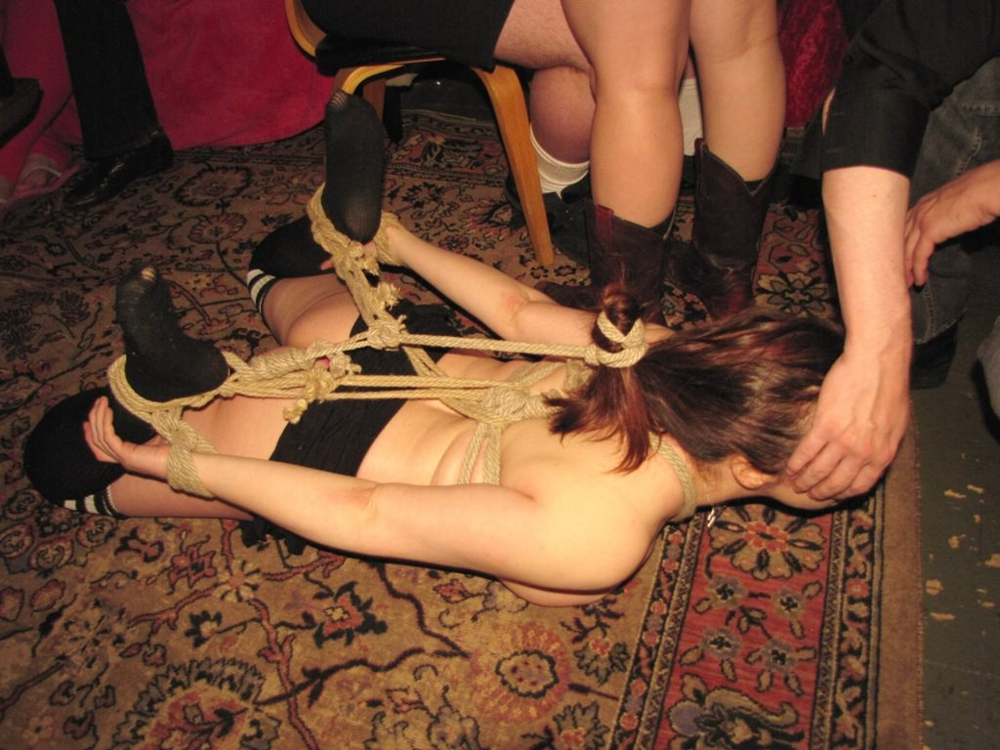

Chapter 1
Let’s look at three scenarios—all negotiated and consensual, of course. If you’re new to BDSM, make sure to read up on consent before you do rope or any other kind of play.
1. Soft lighting illuminates the bed. Plush pillows and blankets caress your naked limbs. Maybe your eyes are closed; maybe they’re covered with a satin eye mask. Sexy music grinds a slow beat. The room is as warm and comforting as a lover’s breath. The rope twines around your wrists, pulling your arms gently over your head as your partner fastens the rope to the bed frame—taking their time, teasing you with kisses or whispering what they’re going to do to you. By the time your legs have been tenderly spread a few inches and your ankles wrapped, you feel sensuous and aroused and completely safe, submitting to the experience, knowing that whatever happens, you will be treated adoringly.
2. You shiver slightly from the chill in the club, no clothing at all to keep your body warm. You feel exposed—strangers are watching, and your partner has instructed you not to close your eyes. The music is blaring a grating industrial track. The cement floor is cold beneath your bare feet. When your partner cinches the rope around your chest, it feels rough and unyielding. Your arms are tied behind your back, and you can’t scratch that maddening itch on your cheek. When the ropes are in place, your partner picks you up like a suitcase and tosses you onto a mat. You have no idea what’s going to happen; maybe you’re even a little afraid.
3. You struggle as your partner wrestles you to the ground, their weight pinning you down. The rope abrades your bare skin as you try to wriggle away, and you rack your brain for ways to fight back without hurting yourself more. You manage to flip over onto your stomach, and your partner quickly ties your ankles together and drags your naked body across the floor. Your hands clutch back at the rope until your partner ties your wrists together, slapping your face as punishment for trying to escape. Tears stream from your eyes as a ball gag is shoved into your mouth. Your partner puts you in a hogtie that leaves your lower half completely exposed. You know what’s coming next, and you’re pretty sure it’s going to hurt.
Whew, is it hot in here, or is it just me? Maybe one of those scene descriptions floats your boat, maybe not. The point is that there are as many different types of rope experiences as there are people in the world, and knowing which sort does float your boat is the first step in making it happen.
That doesn’t mean you can order up a rope experience like à la carte sushi. Every tying experience is unique, and if you have strong expectations for a rope scene, you’re setting yourself up for disappointment. But on a basic level, it’s good to find a rope top who’s on the same page as you. That brings us to Helpful Skill No. 2: Knowing Yourself. More on that in Chapter 4, but for now it’s just important to realize that if, for example, you want a light, sensual experience and the rope top you’re considering is a heavy-duty sadist, it’s probably not a great fit.
There’s a lot of overlap in these categories, and they don’t cover everything, but they’ll give you some flavors to taste.
Rope tops generally follow either the Japanese style—including Shibari/Kinbaku, which uses artistic and carefully studied patterns of rope placement, sometimes involving erotic pressure points—or the Western style, which actually covers a wide range of individual styles. I think of Western like the Wild West—anything goes. It can look artistic, can be merely functional (“Let’s just get that bod in the air!”), can involve just a few ropes or enough to make you look like a mummy.
Basic floor scenes: Any rope scene is which the bottom is not suspended (either partially or fully); could be as easy or as challenging as you please. There are endless variations; it includes things like just wrists or ankles bound, spread-eagle ties, shrimp ties, hogties, breast and genital bondage, bondage for sex, and the ever-popular “making shit up” style.
Ichinawa: Japanese “one rope” technique. Intimate and sensual, it focuses more on connection between partners and the sensation of the rope than any formal or even aesthetically pleasing pattern.
Partial suspensions: One body part is always in contact with the floor, while the rest of the body’s weight is supported by rope and a hardpoint. The supporting body part could be a foot, the entire lower body or upper body, arms or hands, etc.
Full suspensions: Rope and a hardpoint completely support all of the body’s weight. The body could be an inch off the floor or 15 feet; if no body part is touching the ground, it’s a full suspension. There are static suspensions, in which one pose is held the entire time, and dynamic ones, in which the bottom either is moved through pose transitions by the rigger (say, sideways to face up to inversion) or moves on their own through different transitions. If the bottom does the moving solo, it’s sometimes called dancing in the rope.
Double or triple suspensions: These can be partial or full; they include more than one body. Before you jump into one (“The more the merrier—rah!”), consider that you may be in very close proximity with your fellow bottom(s) for quite a while. Your private parts may be touching; you’ll be smelling the other bottom(s)’ skin, hair, breath; you’ll be experiencing their energy just as much as the rope top’s. So choose your bottoming partners thoughtfully.
Predicament bondage: The bottom has a limited range of positions, and none are comfortable; switching positions means trading one kind of discomfort for another: a different kind of pain for each, say, or pain versus humiliation. Example: The bottom is forced to stand on tiptoes or their hair will be yanked painfully. This style doesn’t appeal to me one bit, but some people love it.
Speed tying: Getting the bottom tied up as quickly as possible, sometimes while they’re fighting back. It can be as simple as Graydancer’s Tie ’Em Up and Fuck ’Em method, which has just three steps and takes, like, literally a minute. Speed tying can even be applied to suspensions (check out Saki Kamijoo on Vimeo). Usually the look is less about beauty and more about function.
Escapist bondage: Wherein the fun is in the bottom’s trying to get free of the ties without help from the rope top.
Hojojutsu: Japanese style used to restrain prisoners quickly. Can involve fighting back and can be painful. Tends to involve riskier ties, like neck rope and single strands.
Semenawa: Japanese concept of torture or punishment rope; the goal is to create ties that are stressful or painful.
~
Any of these can also involve fantasy and role-playing. Captured princess/prince, pirates, intruders, abductions, interrogations…the possibilities are limited only by your imagination and turn-ons.
When I meet a potential rope top, I ask them what turns them on about rope and what type of experience they like to have. I’m open to many different kinds of experiences; one of my turn-ons is experiencing the energy and style of each individual partner. But I’m not an extreme masochist, so if I hear phrases like “beautiful suffering” or “pushing edges,” I proceed with extreme caution. These phrases may be the very things that turn you on, however.
One of the words that turns me on, as you can see in the photo below, is “hogtie.” (Ropework by -Mr-D-. Photo by Michael Sundin Photo.)

I really urge you to honor what feels right to you. Some bottoms have a need to please that causes them to ignore what’s right for them. I recommend that you don’t let a rope top’s hotness, persistence, conviction, community status, or even international fame influence your decision to be tied by them. In the end, you’ll have to live with the experience.
And remember to have fun! It’s your scene. If you want to be a captured maiden or lad being ravaged by a pirate, get out that ruffly shirt. If you want to be abducted by a secret agent who needs to know that damn code, practice saying “I’ll never tell” convincingly. Don’t be embarrassed about your desires in a scene; whatever turns you on, you can bet there’s a whole group of people who feel the same way.
Rope can be made from many materials. Some are natural, such as hemp, jute, cotton, silk, and linen/flax. Some are synthetic, such as nylon and polypropylene. Rope can have a natural color or be dyed any shade of the rainbow.
There are different methods of processing, different finishing treatments, and different ways of arranging the strands, such as braiding and twisting. To top it off, there are different lengths (measured in feet or meters) and different diameters (measured in inches or millimeters).
Your rope top will likely have a preference, but you should pay attention to see if you’re allergic to the material. Also be aware that some rope types are scratchier than others; coconut rope, for example, is intentionally very scratchy. And some shed more, especially if the rope hasn’t been processed or finished properly (hello, jute!), meaning little fibers fly off it and can get up your nose, making it itch or even making you sneeze.
Speaking of rope tops’ preferences, I have never met a rope top who doesn’t have a specific method of coiling their rope (arranging each length in a neat little bundle). So don’t just start picking up rope after the scene and coiling it any which way in an effort to be helpful. Ask if they want help coiling, and if they do, they’ll show you how to do it their way.
Don’t be discouraged if you can’t do it well right away. Your rope top has done it so many times, they could do it in their sleep, while you’re just learning—and learning while maybe dealing with a certain degree of spaciness, depending on your scene. Just keep trying, and if you tie with the person and practice enough, you’ll get it eventually.